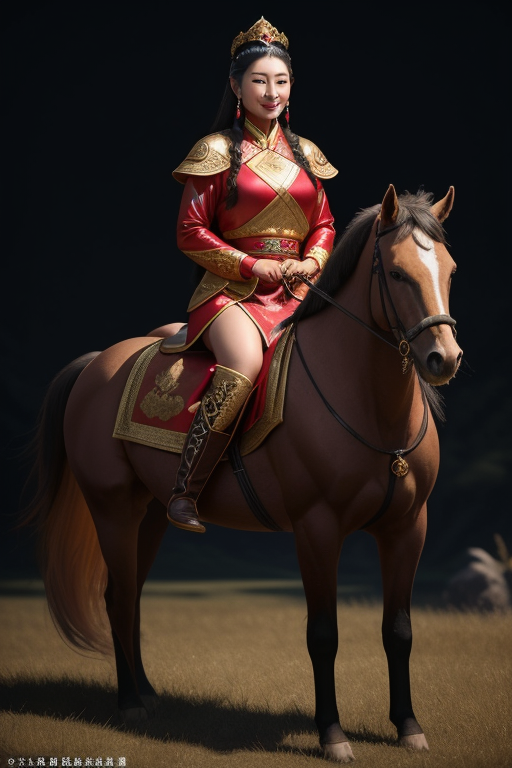

赵敏
她是蒙古王爷察罕帖木儿之女，本名敏敏特穆尔，封号绍敏郡主。她聪慧绝伦、美貌无双，是汝阳王府的实际智囊，一手策划了围攻光明顶、囚禁六大派的惊天大局。然而这样一个政治天才，最终却为了爱情放弃了郡主身份、背叛了朝廷、与父兄决裂——她是金庸笔下最光彩照人的女性角色之一，灿若玫瑰。

人物小传
| 姓名 | 敏敏特穆尔（汉名：赵敏） |
| 别名 | 绍敏郡主、蒙古第一美人、妖女 |
| 出身 | 元大都汝阳王府 |
| 父亲 | 察罕帖木儿（汝阳王，元朝天下兵马大元帅） |
| 兄长 | 王保保（扩廓帖木儿，元朝名将） |
| 师父 | 苦头陀（范遥）、玄冥二老等王府高手 |
| 配偶 | 张无忌（明教第三十四代教主） |
| 身份 | 蒙古郡主、汝阳王府智囊、明教教主夫人 |
| 主要能力 | 政治谋略、兵法韬略、博闻强识、精通各派武功 |
| 性格特征 | 聪慧果敢、敢爱敢恨、大局观强、执行力超群 |
| 最终归宿 | 与张无忌一起归隐，从此不问世事 |
赵敏是金庸武侠世界中最具现代性的女性角色——她不是等待被拯救的公主，而是掌握自己命运的强者。她的每一次选择都主动而决绝：爱，就全力以赴；弃，就义无反顾。她证明了真正强大的人，敢于为爱跨越一切藩篱。
性格分析
核心性格特质
赵敏的性格可以用八个字概括：智计无双，情义万钧。她是金庸小说中少有的兼具顶级智商和顶级情商的人物。在政治上，她运筹帷幄、杀伐果断，一手策划了围攻光明顶的庞大计划，将六大派高手玩弄于股掌之间；在感情上，她热烈坦率、不遮不掩，为了张无忌不惜与全世界为敌。
赵敏身上有一种极为罕见的品质：她从不自怜。无论身处何种境地——被冤枉、被迫与父兄决裂、被周芷若嫁祸——她从不怨天尤人，而是立刻思考下一步该怎么办。这种强大的心理素质和行动力，让她在金庸所有女性角色中独树一帜。
她还有一个容易被忽略的优点：识人极准。她一眼就看透了张无忌的为人——忠厚、善良、值得托付。正是这个精准的判断，让她敢于押上自己的一切。她看人从不看表面，而是看本质，这是顶级领导者才有的能力。
人格类型类比
从现代心理学角度看，赵敏最接近ENTJ（指挥官）人格：外向、理性、果断、天生领袖。她有着超乎常人的战略眼光和执行力，能够在复杂局势中迅速找到最优解。但同时她也是一个高情商的实用主义者——她知道什么时候该强硬，什么时候该示弱，什么时候该等待。
如果放在现代职场，赵敏会是一个优秀的CEO——既有制定战略的高度，又有执行落地的能力，还懂得人心和激励。她能带领团队在极度不利的局面下翻盘。
性格矛盾与成长弧线
赵敏的核心矛盾是「身份与爱」之间的撕裂。作为蒙古郡主，她肩负着维护元朝统治的使命；作为爱上了张无忌的女人，她又不得不与自己的使命对抗。这个矛盾最终在她决定背叛朝廷、与张无忌在一起时达到了顶点——她选择了爱，放弃了身份。
另一个深层转变是从「用计」到「用心」。初期的赵敏一切靠智谋，把人当成棋子；后期的赵敏学会了真诚和信任，学会了为一个人放下所有的算计。这个转变不是能力的退化，而是人格的升华。
命运轨迹
绿柳山庄地牢：这是赵敏命运的转折点。在那个狭小的空间里，张无忌的忠厚和真诚第一次真正打动了她。一个从不在意男人的政治天才，因为一场意外的心动而改变了自己的人生轨迹。
光明顶婚礼抢婚：赵敏在张无忌的婚礼上以谢逊的安危为由「抢婚」。这不仅是对张无忌感情的宣言，更是她与过去身份的彻底决裂——从此，她不再是绍敏郡主，只是张无忌的赵敏。
奇遇与转折
能力养成之路
王府教育：赵敏的「奇遇」不是武功秘籍或灵丹妙药，而是她从小在汝阳王府接受的顶级教育。汝阳王是元朝最有权势的军事领袖，王府中有各色奇人异士——玄冥二老、苦头陀范遥、西域金刚门高手等。赵敏在这样的环境中长大，对各门各派的武功路数了如指掌，这使得她在后来的斗智斗勇中始终占据主动。
博闻强识：赵敏有着过目不忘的记忆力，对各派武功的特点、各势力的关系网、各地的地理形势都了然于胸。这种知识储备让她在制定计划时能做到滴水不漏。她的智谋不是天生的，而是建立在海量信息和深度思考之上的。
人生的真正转折
遇见张无忌：赵敏最大的「奇遇」是遇见了张无忌。在认识张无忌之前，她是一个完美的政治机器——聪明、冷酷、以大局为重。张无忌的善良和真诚像一面镜子，照出了她内心深处被压抑的人性和情感。她第一次发现，原来在这个世界上，有比权力和使命更重要的东西。
被周芷若嫁祸：灵蛇岛事件是赵敏人生中最大的逆境，但也是她成长的催化剂。在被所有人误解、最孤立无援的时候，她展现出了超乎常人的韧性和冷静。她没有崩溃，而是默默收集证据、等待时机——这种在绝境中的从容，是她最令读者敬佩的地方。
赵敏的「奇遇」与张无忌完全不同——张无忌靠的是天降机缘，赵敏靠的是自身积累。她的能力是实打实学来的，她的转折是主动选择的。金庸似乎在用赵敏告诉我们：真正的强大不是运气给的，而是自己挣来的。她唯一「被动」的事情是爱上了张无忌，但即便在这件事上，她也是主动出击、勇敢追求的一方。
能力与武功
政治谋略——赵敏真正的「武功」
如果说张无忌的武功是九阳神功和乾坤大挪移，那么赵敏真正的绝学就是她的政治智慧和战略眼光。她策划的围攻光明顶、囚禁六大派、武当逼宫等一系列行动，从战略设计到战术执行都堪称完美。若非遇上了武功逆天的张无忌，她的计划几乎无懈可击。
她的谋略有三个特点：全局视野——从不计较一城一地的得失，而是通盘考虑；知己知彼——对各派实力、人物性格了如指掌；攻心为上——善于利用人性弱点，不战而屈人之兵。
武功基础
赵敏本身的武功修为在江湖一流高手面前不算顶尖，但她的武功素养非常全面。她学过各门各派的武功，虽然没有专精，但胜在见识广博，能够很快看清对手的路数并找到破解之法。更重要的是，她有玄冥二老、阿大阿二阿三等一流高手作为手下，如臂使指。
她最擅长的兵器是倚天剑——在武当山上，她手持倚天剑与张无忌对峙，虽然最终不敌太极剑，但她的剑法根基非常扎实。不过，在金庸的设定中，赵敏的价值从来不在于她的武功有多高，而在于她的大脑有多强。
情感世界
与张无忌：从对手到爱人的完美弧线
赵敏与张无忌的爱情是金庸小说中最动人的「对手变爱人」故事。他们的关系经历了四个阶段：敌人→对手→朋友→爱人。每一次转变都有扎实的情感基础。
最初，赵敏将张无忌视为最大的对手——一个武功高到可以破坏她所有计划的变量。绿柳山庄的地牢中，张无忌挠她脚心逼她放人，她从愤怒到心动的转变只在一瞬间。赵敏自己后来说：「从那一天起，我就知道，我这辈子再也放不下你了。」
赵敏在感情中的付出是惊人的：她放弃了郡主身份、背叛了朝廷、失去了家族的支持，几乎是以「净身出户」的方式走向张无忌。这种决绝的爱令人动容——她不是一个需要依赖男人的人，但她选择了相信这个男人。
张无忌最终选择赵敏而非周芷若，看似意外，实则在情理之中：赵敏给了他最稀缺的东西——确定性。在张无忌摇摆不定的时候，赵敏用行动告诉他「我非你不可」。
与父亲和兄长：最难割舍的亲情
赵敏与父亲察罕帖木儿的感情极为深厚。当她在婚礼上抢走张无忌后，父亲派人找到她，给她最后一次机会回头。赵敏跪在父亲面前说：「女儿不孝，此生已不能为察罕家争光了。但我求您饶过无忌，他不是坏人。」父亲的沉默和最终放她离开，是全书最令人唏嘘的亲情场景之一。
与兄长王保保之间则是复杂的竞争与亲情。王保保是元朝名将，对赵敏既疼爱又有竞争。当赵敏选择张无忌后，兄妹从此陌路——这成了赵敏心中永远的痛。
与周芷若：宿命的对手
赵敏与周芷若的关系从表面的情敌升级为深层的「镜像」——她们都是极其聪明的女子，都深爱张无忌，但选择了完全不同的路径。赵敏选择以真面目示人（即使被骂妖女），周芷若选择以假面示人（伪装温柔贤淑）。两人的对抗本质上是两种价值观的碰撞。
趣事典故
名场面：绿柳山庄地牢
张无忌和赵敏一同落入地牢陷阱。赵敏以机关控制权要挟张无忌，张无忌情急之下脱下赵敏的鞋袜，挠她脚心来「逼供」。赵敏又气又羞，最终不得不放人。这是金庸小说中最经典的男女互动之一——一个忠厚老实的男孩，用最笨拙的方式，让最聪明的女孩动了心。
名场面：婚礼抢婚
张无忌与周芷若成婚当日，赵敏孤身闯入光明顶婚礼现场。明教群雄、各派高手剑拔弩张，赵敏面不改色地拿出金毛狮王谢逊的一缕金发作为信物，要求张无忌兑现第三个承诺——「今日不得与周芷若成婚」。当周芷若以九阴白骨爪抓向赵敏时，张无忌出手相护。赵敏在全场敌意的目光中说出：「我偏要勉强。」这一场景成为金庸武侠中最具代表性的爱情宣言。
冷知识：赵敏名字的由来
「赵敏」这个汉名是她自己取的。「赵」是宋朝皇族的姓氏，她选择这个姓本身就意味深长——一个蒙古郡主，偏偏要取宋朝国姓作为自己的汉名。金庸没有解释原因，但读者可以解读为：她从小就对汉文化有着深刻的认同和向往，这也为她后来的人生选择埋下了伏笔。
妙语金句
「你要是对我不起，我一刀杀了你。」——赵敏对张无忌的「情话」（用最狠的语气说最甜的话）。
「天下人骂我是妖女，我不在乎。我只在乎你信不信我。」——赵敏被冤枉时的自白。
「我这一生，从来没有后悔过。」——赵敏对自己人生选择的总结。
1986版黎美娴的赵敏娇俏灵动；1994版叶童的赵敏英气十足；2001版黎姿的赵敏是公认的经典——她将赵敏的聪慧、美貌、狠辣和深情完美融合，被金庸本人称赞「最符合原著」；2003版贾静雯的赵敏甜美大气；2019版陈钰琪的赵敏英气与柔情并存，是新一代观众心目中的经典。
现实启示
选择决定人生，而非出身
赵敏的出身是蒙古郡主，拥有常人难以企及的资源和地位。但她最终的人生高度不是由出身决定的，而是由她的选择决定的。她选择了张无忌、选择了爱情、选择了做一个「普通人」。这个选择让很多人觉得可惜，但她自己从未后悔。赵敏告诉我们：人生的价值不在于你拥有多少，而在于你敢于放弃什么。
「我偏要勉强」——对抗宿命的勇气
赵敏一生都在「勉强」——勉强一个不可能爱她的人爱上她，勉强一场注定失败的婚礼取消，勉强跨越蒙汉之间的种族鸿沟。这些「勉强」看似任性，实则是她对抗命运、争取自己想要人生的宣言。在现代社会，这种精神尤为珍贵：不要轻易接受「不可能」，有些事情值得你偏要勉强。
智谋的价值
赵敏是金庸小说中最懂「用脑」的角色之一。她证明了在很多时候，智慧比武力更有力量。在现代职场中，战略思维、识人能力、信息整合能力都是极为稀缺的竞争力。赵敏式的思维方式——全局思考、知己知彼、攻心为上——在任何领域都是高级能力。
做主动的追求者
赵敏在感情中从不被动等待。她看准了张无忌，就全力以赴去争取；她知道自己要什么，就不在乎别人怎么看她。这种「主动型人格」在传统女性角色中极为罕见。在现代语境下，赵敏是女性独立意识的先行者——她不需要任何人定义她的人生，她自己就是自己人生的作者。
1. 敢爱敢恨，不悔不怨——人生最大的遗憾不是选择错了，而是从来没有勇敢过。
2. 用脑子而不是用情绪解决问题——赵敏在最愤怒的时候依然保持理智，这是她最可怕也最可敬的地方。
3. 「我偏要勉强」——当你确信一件事值得做的时候，不要让任何人告诉你「不可能」。